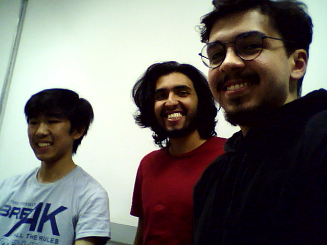

Conhecer os comandos para visualizar e gravar imagens e vídeos no Ubuntu com o OpenCV, gravar um Vídeo e mostrá-lo no relatório e Elaborar o relatório em equipe de alunos.
Ao rodar o programa, foi observado que a imagem apresentada está em escala de cinza. A imagem abre desse jeito visto que dentro do código .py existe a seguinte linha de comando:
img = cv.imread('messi5.jpg',0)
Quando verificamos na documentação do OpenCV, é mencionado que o último termo define como que a imagem será lida, onde com o valor 0, é utilizado em escala de cinza. Para que a imagem seja obtida com cores, podemos alterar esse parâmetro para 1, conforme abaixo:
img = cv.imread('messi5.jpg',1)
Quando executamos, observamos que é passado um vídeo. Esse vídeo está em velocidade normal e com cores. Podemos alterar a velocidade de reprodução do vídeo alterando a seguinte linha do código:
time.sleep(1/25.0)
Quando alteramos o valor do dividendo (25), podemos acelerar a reprodução, ou deixá-la mais lenta. Por exemplo, ao abaixar para 1/1, é mostrado 1 frame a cada 1 segundo, fazendo que o vídeo aparenta estar travado, visto que cada frame é atualizado a cada segundo. Quando alteramos para 1/1000, o vídeo é reproduzido de forma bem mais rápida, visto que todos os frames são mostrados em intervalos menores e o vídeo inteiro é acelerado
APara este código, foi solicitado que ao pressionar a tecla X no teclado, é salva uma foto do frame em questão. Essa função pode ser feita com a adição das seguintes linhas no código:
if cv.waitKey(1) == ord('x'):
cv.imwrite('foto1.png', frame):
Inserimos logo abaixo da outra função “If”. No caso a adição destas linhas fazem que ao ser pressionado o “X”, o frame é salvo como uma imagem com o nome de “foto1.png”. Caso nenhuma tecla seja apertada, nada acontece.
No código acima, foi visto que o vídeo está com uma reprodução bem lenta e o vídeo está invertido, para resolver esses dois problemas, podemos realizar as seguintes alterações:
fps = 10.0 -> fps = 30.0
frame = cv.flip(frame, 0) -> #frame = cv.flip(frame, 0)
A primeira alteração resulta na fluidez da imagem, onde aumentamos a taxa de atualização da reprodução. A segunda alteração é relacionada à inversão do vídeo. Esse ajuste pode ser feito de duas maneiras, a que optamos foi por desabilitar a função de cv.flip por adicionar o “#” no início. Outra maneira poderia ser por alterar o segundo parâmetro da função para 1, o que resulta apenas no espelhamento do vídeo, fazendo que movimentos para a esquerda fiquem na mesma referência para o autor do vídeo.
Foto tirada em laboratório 25.06.2024 dos integrantes do grupo:
Avatar criado com a foto anterior dos membros do grupo:
Link para os videos criados:
Video com pessoa lenta